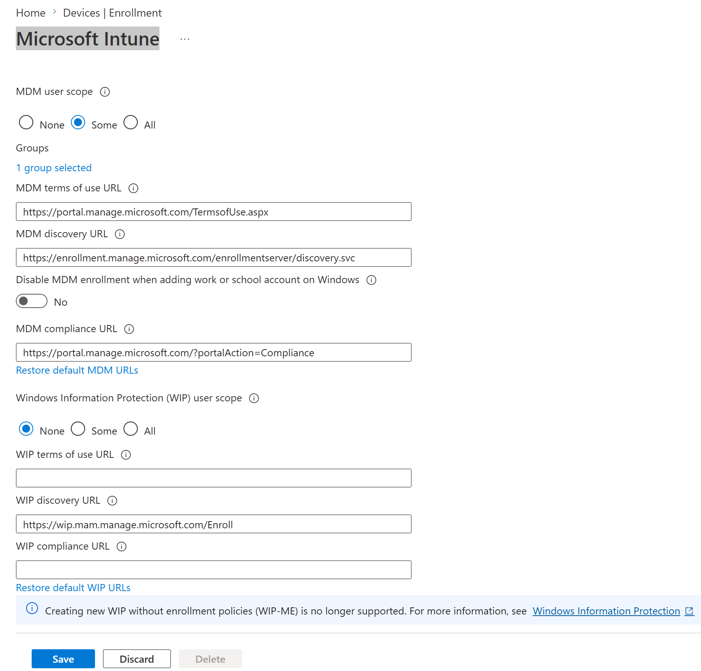
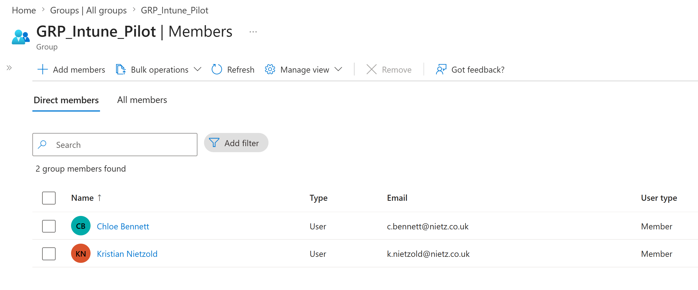
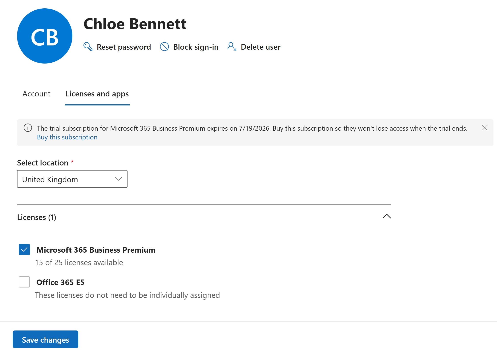
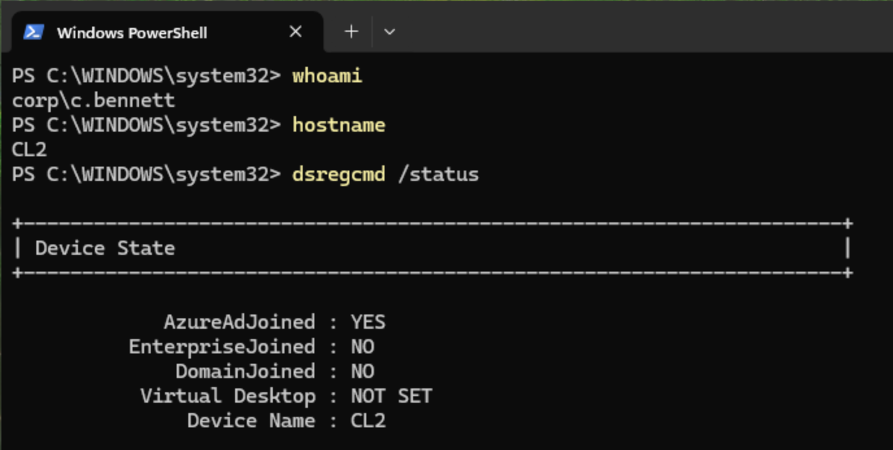
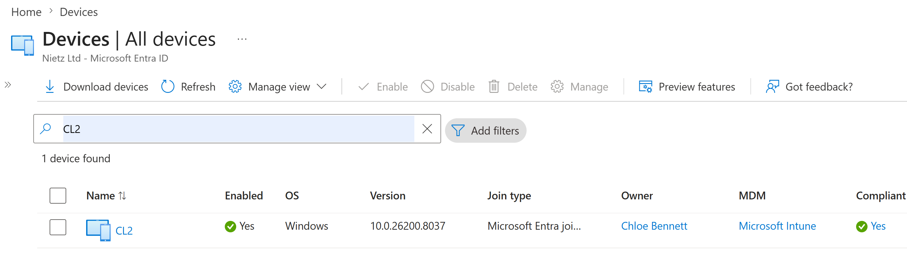
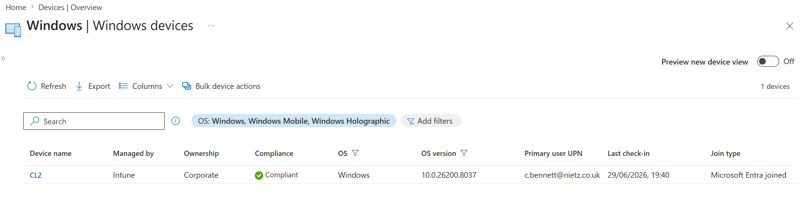
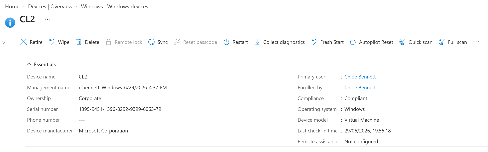

Lab 15: Cloud-Native Entra Join and Intune Auto-Enrolment
Configured a controlled Intune enrolment pilot, built CL2 as a cloud-native Windows device, joined it to Microsoft Entra ID and validated automatic Intune enrolment as a compliant corporate device.
Overview
In this lab, I introduced the first cloud-native managed Windows endpoint for Nietz Ltd. Unlike the earlier domain-joined workstation, CL2 was set up through the Windows work or school setup experience and joined directly to Microsoft Entra ID.
The lab used a controlled pilot approach. Intune automatic enrolment was scoped to the existing GRP_Intune_Pilot group, Chloe Bennett was confirmed as a licensed pilot user, and the final device state was validated in both Microsoft Entra ID and Microsoft Intune.
Objective
The objective was to prove that a new Windows client can be cloud joined to Microsoft Entra ID and automatically enrolled into Intune under a pilot-controlled MDM enrolment scope, without joining the on-premises Active Directory domain.
Environment
| Component | Value |
|---|---|
| Company | Nietz Ltd |
| Microsoft 365 / Entra domain | nietz.co.uk |
| Client device | CL2 |
| Device platform | Windows virtual machine |
| Device join type | Microsoft Entra joined |
| On-premises domain join | Not domain joined |
| Management platform | Microsoft Intune |
| MDM enrolment scope | Some users, scoped to GRP_Intune_Pilot |
| Pilot user | Chloe Bennett |
| Pilot user UPN | c.bennett@nietz.co.uk |
| User licence | Microsoft 365 Business Premium |
Configuration
1. Intune Automatic Enrolment Scoped to Pilot Group
I configured Windows automatic MDM enrolment so that only selected pilot users were targeted. The MDM user scope was set to Some, with one selected group, and Windows Information Protection was left disabled for this lab.

2. Pilot Group Membership Confirmed
I confirmed that GRP_Intune_Pilot contained Chloe Bennett before using her account to join the new Windows device.

3. Chloe Bennett Licence Confirmed
I checked Chloe Bennett's Microsoft 365 licence assignment and confirmed that Microsoft 365 Business Premium was assigned.

4. CL2 Entra Join State Validated Locally
After completing Windows setup as Chloe Bennett, I validated the local device join state using dsregcmd /status. The output confirmed that CL2 was Microsoft Entra joined and not joined to the on-premises AD domain.

5. Entra Device Record Validated
I searched Microsoft Entra ID for CL2 and confirmed that the device record showed Microsoft Entra joined status, Chloe Bennett as the owner, Microsoft Intune as the MDM provider, and a compliant state.

6. Intune Managed Device List Validated
I reviewed the Windows devices list in Intune and confirmed that CL2 was managed by Intune, corporate owned, compliant, assigned to c.bennett@nietz.co.uk, and recently checked in.

7. Intune Device Overview Validated
I opened the CL2 device record in Intune and confirmed the essential details: device name, corporate ownership, primary user, enrolled by user, compliance state, operating system, virtual machine model and last check-in time.

Validation
The lab was validated when GRP_Intune_Pilot was selected as the MDM enrolment target, Chloe Bennett was confirmed as a licensed pilot user, CL2 reported AzureAdJoined : YES and DomainJoined : NO, Microsoft Entra showed CL2 with MDM set to Microsoft Intune, and Intune showed the device as managed, corporate owned, compliant and checked in.
Key Technical Outcomes
This lab demonstrated controlled Windows automatic enrolment, Intune pilot targeting, Entra joined device provisioning, Intune device management validation, user-to-device association, and endpoint compliance visibility.
It also established a clean cloud-native device baseline that can be reused for later Intune configuration profile, compliance policy, Windows Hello for Business, update ring, LAPS and Autopilot labs.
Summary
- I configured Intune automatic enrolment for selected pilot users.
- I confirmed Chloe Bennett was a member of
GRP_Intune_Pilot. - I confirmed Chloe had Microsoft 365 Business Premium assigned.
- I completed Windows work or school setup on
CL2as Chloe Bennett. - I validated locally that
CL2was Entra joined and not domain joined. - I confirmed the tenant-side Entra device record showed Microsoft Intune as the MDM provider.
- I confirmed
CL2was managed, corporate owned, compliant and checked in through Intune.